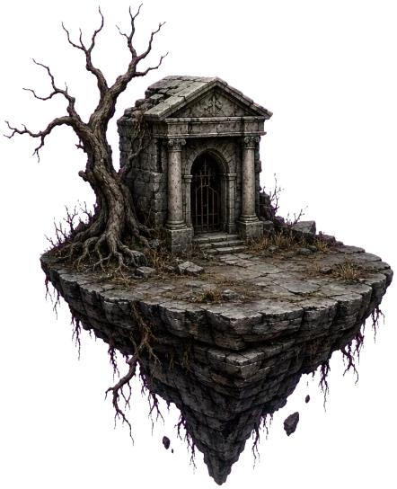
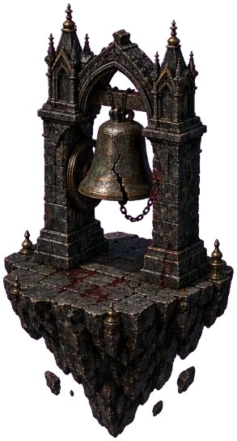
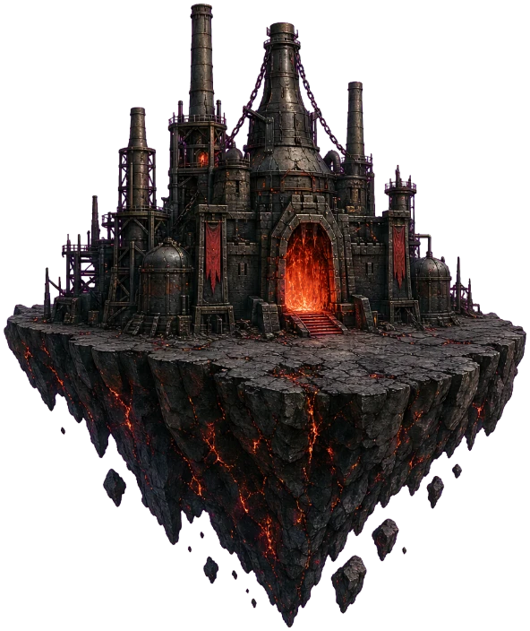

SHADOWREND



İPUCU
Kızıl ay yükseliyor…
0%
HAZIRLANIYOR…
SEVİYE
1
DALGA 1
00:20
MATERYAL
0
KADİM HASATÇI
GÜNLÜK
SEFER HARİTASI
HAYATTA KALMA KUPASI
Sahada geçen her dakika yolda bir adımdır.
0DAKİKA
Sonraki ödüle 2 dk
ÖDÜL YOLU
0 / 8 AÇILDI
DİZİLİMLER—dokun: geç · tekrar: adlandır
KUŞANIM
—
Eşyalar seçili kahramana giyilir · yuvaya dokun, çanta o yuvaya süzülsün
ÇANTA—
KART PAZARIaltınla · her gün yenilenir
GEM KESESİpremium · anında
GEM BOZDURgem → altın
Altın her görevin sonunda kazanılır — ölsen bile. Gem ise gerçek para ile alınır; efsane kahramanlar onunla açılır.
EFSANE
YAKIN
SEVİYE1
HASATÇI
Son Kılıç
—
Sv 1/6
EŞYA
NADİR
YUVAZIRH
—
AÇMAK İÇİN DOKUN
%30 İNDİRİM
SANDIK
—
SANDIK
—
GÜÇ UYANDI
RÜNÜNÜ SEÇ
HESAP SEVİYESİ YÜKSELDİ
2
HESAP YOLCULUĞU
SEVİYE ÖDÜLLERİ
1
Görev tamamladıkça hesap seviyen yükselir; her yükselişte can ve hasarın az da olsa güçlenir, belirli seviyelerde ise bir sandık kazanırsın.
SOLGUN MEZARLIK
GÖREV 1
1
ARENA KURULUYOR0%
Rünler savaş alanında seni bekliyor…
MÜHLET
AYARLAR
SES
EFEKTLER62
MÜZİK50
GÖRÜNTÜ
KALİTEOTOMATİK
PİL MODU30 FPS · daha az ısınma
HİS
TİTREŞİM
EKRAN SARSINTISIDarbe tekmesi ve yakınlaşma
DİL
OYUN DİLİ
HAREKETİ AZALTMenü döngüleri durur
RENK KÖRLÜĞÜElit renkleri güvenli palete geçer
BÜYÜK YAZIAçıklamalar ve hasar sayıları büyür
BİLDİRİMLERSandık hazır · günlük ödül
YASAL VE DESTEK
KAYIT
OYUNCU KİMLİĞİ—
SÜRÜM—
GELİŞMİŞ
PERFORMANS RAPORUSon 30 koşu · yalnız bu cihazda
HATA KAYDI · 0Destek için kopyalayıp gönder
GÖREV TAMAMLANDI
GÖREV TAMAMLANDI
3
REKLAM
OYNATILIYOR…
SEZON I · HAFTALIK
GÖREVLER
0/60HAFTA PUANI
—
SEZON I
SAVAŞ BİLETİ
1/50
0/120 GEÇİŞ XP
PREMİUM GEÇİŞ
Sağ sayfada özel kahramanlar ve sandıklar
SEZON I — KIZIL AY
SAVAŞ BİLETİ
GRİMUAR AÇILIYOR
CİHAZINI DİKEY TUT